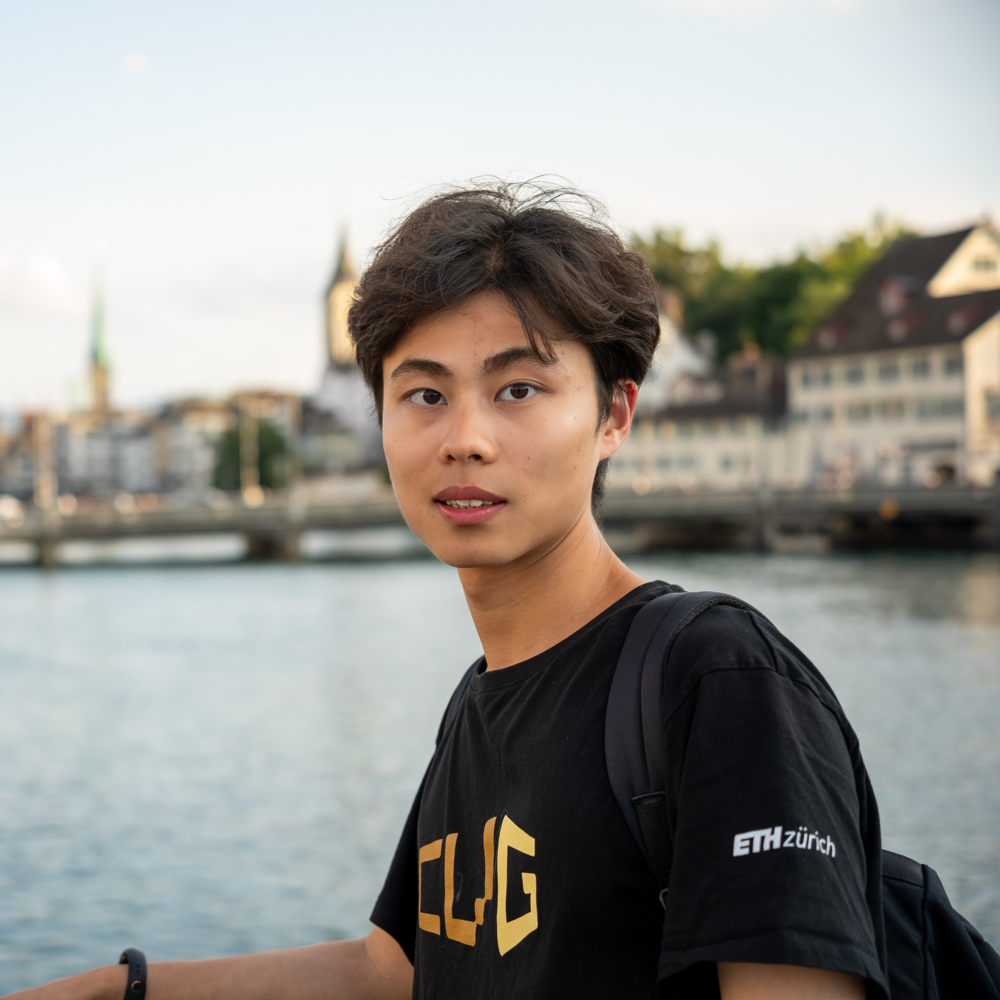
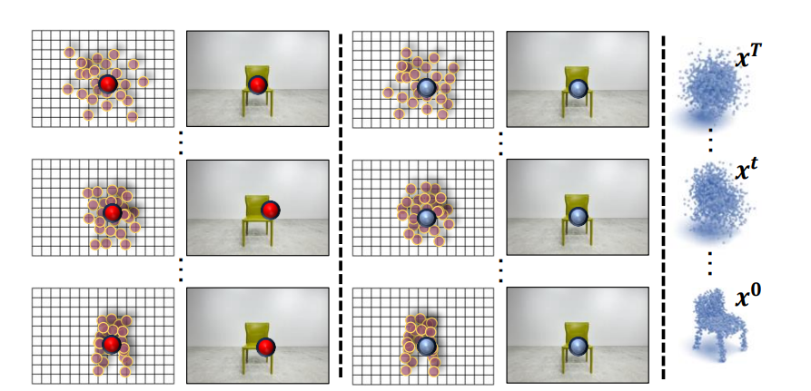
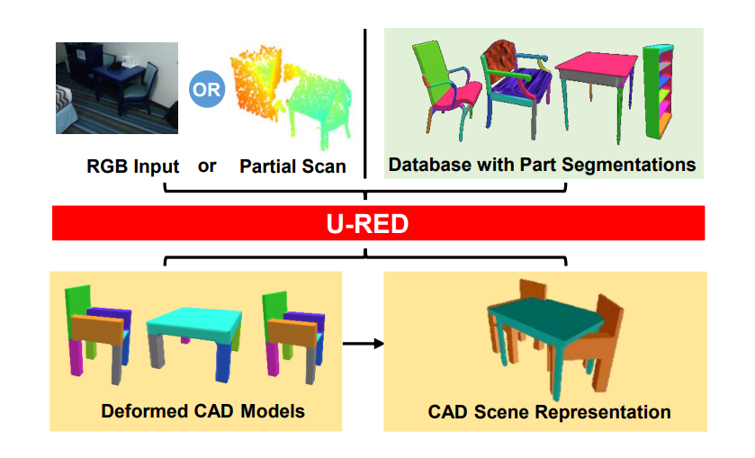
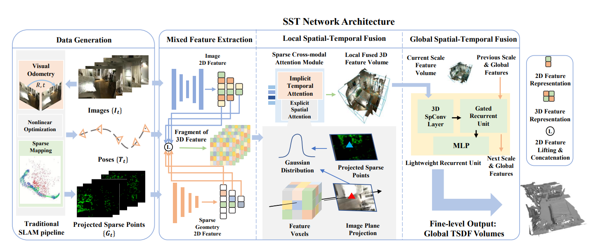
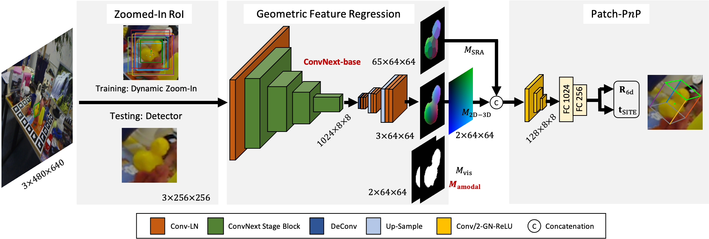

|
 |
Chenyangguang Zhang (张晨阳光) Master student at Department of Automation, Tsinghua University Email: zcyg22@mails.tsinghua.edu.cn Google Scholar • GitHub |
|
|
News
 |
CCD-3DR: Consistent Conditioning in Diffusion for Single-Image 3D Reconstruction |
 |
U-RED: Unsupervised 3D Shape Retrieval and Deformation for Partial Point Clouds |
 |
SST: Real-time End-to-end Monocular 3D Reconstruction via Sparse Spatial-Temporal Guidance |
 |
GDRNPP: Extending Geometry-Guided Direct Regression Network in 2022 |
Interships
Honors and Awards
Miscellaneous
I love sports. I enjoy playing soccer⚽ and badminton🏸, etc. and serve as a winger of soccer team of DA, THU. I'm a soccer fans of Man. Utd. and José Mourinho.
I'm also interested in writing novels and poems. Some of my works are published on Chinese literary magazines. My Wechat official account is named "了妄", where I share some poems I wrote.
I'm a guitar player admiring Tommy Emmanuel and Kotaro Oshio. Meanwhile, I'm a figure skating fans of Yuzuru Hanyu.
Feel free to get in touch!